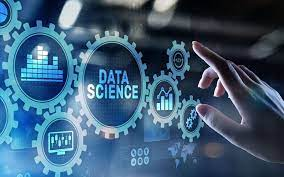

Varios informes recientes sobre el estado de la ciencia de datos ha identificado cuatro desafíos principales que enfrentan los profesionales de este campo en su búsqueda por extraer conocimientos significativos y tomar decisiones informadas a partir de la avalancha de datos disponibles. En esta exploración, analizaremos detalladamente estos desafíos y sus implicaciones en el panorama de la Ciencia de Datos moderna.
Ciencia de Datos CD y PC
Desafíos y problemas
Obtención de valor de la ciencia de datos

En la era digital actual, la ciencia de datos se ha posicionado como una herramienta invaluable para las empresas que buscan obtener insights significativos y tomar decisiones informadas basadas en datos. Sin embargo, a pesar del vasto potencial que ofrece este campo, enfrenta desafíos significativos en términos de obtener un valor tangible y demostrable para las organizaciones. Un informe reciente destaca tres obstáculos principales que afectan la capacidad de los profesionales de la ciencia de datos para demostrar el impacto de sus esfuerzos en los resultados comerciales.
El primer desafío se relaciona con los obstáculos de producción, que incluyen la gestión de dependencias y entornos, así como la falta de habilidades organizativas necesarias para implementar modelos de producción. A menudo, los profesionales de la ciencia de datos se enfrentan a dificultades técnicas y logísticas al tratar de llevar sus modelos y análisis del entorno de desarrollo al entorno de producción de manera efectiva. La complejidad de administrar dependencias y entornos puede obstaculizar la escalabilidad y la eficiencia de los procesos de implementación, lo que afecta directamente la capacidad de una empresa para aprovechar plenamente el valor de la ciencia de datos.
El segundo desafío radica en la interpretación y extracción de conocimientos significativos de los datos. A pesar de tener acceso a una gran cantidad de datos, las organizaciones a menudo luchan por identificar y comprender las tendencias y los patrones que realmente importan para sus operaciones comerciales. Esto puede atribuirse en parte a la falta de habilidades analíticas avanzadas entre el personal empresarial, así como a la complejidad inherente de los datos en sí. Para aprovechar al máximo la ciencia de datos, las empresas deben invertir en capacitación y desarrollo de habilidades para garantizar que los equipos puedan interpretar y aplicar los insights de manera efectiva en sus operaciones diarias.
El tercer desafío destacado en el informe es la dificultad para demostrar el impacto de la ciencia de datos en los resultados comerciales. Aunque la ciencia de datos tiene el potencial de generar beneficios significativos, desde la optimización de procesos hasta la mejora de la experiencia del cliente, muchos profesionales luchan por cuantificar y comunicar este valor de manera convincente a los líderes empresariales. Esta falta de claridad en cuanto al impacto empresarial puede obstaculizar la inversión continua en iniciativas de ciencia de datos y limitar su capacidad para impulsar el cambio y la innovación en toda la organización.
Dificultad para integrar herramientas de ciencia de datos de código abierto
La Ciencia de Datos se ha convertido en un campo dominado por el uso de herramientas y plataformas de código abierto, con Python destacando como el lenguaje de programación preferido por la mayoría de los científicos de datos. A pesar de la popularidad y las ventajas evidentes que ofrecen estas herramientas, un informe reciente revela una dificultad persistente en su integración efectiva en las prácticas comerciales. El estudio encontró que, aunque el 75% de los científicos de datos utilizan Python con frecuencia o siempre en sus trabajos, aproximadamente el 30% no están implementando medidas de seguridad para asegurar sus canalizaciones de código abierto.
Esta desconexión entre la preferencia por el software de código abierto y la falta de medidas de seguridad plantea importantes interrogantes sobre la adopción y el uso responsable de estas herramientas en entornos empresariales. Si bien es cierto que el software de código abierto ofrece una innovación más rápida y una mayor flexibilidad para adaptarse a las necesidades específicas de los científicos de datos, los problemas de seguridad asociados pueden representar un obstáculo significativo para su adopción generalizada en las organizaciones.
Uno de los principales desafíos que enfrentan las empresas es encontrar el equilibrio adecuado entre la innovación y la seguridad al incorporar herramientas de código abierto en sus prácticas comerciales. Si bien es esencial fomentar un entorno que fomente la experimentación y la exploración de nuevas tecnologías, también es crucial implementar medidas sólidas de seguridad para proteger los datos sensibles y garantizar la integridad de las operaciones comerciales.
Problemas para encontrar y mantener científicos de datos calificados
Uno de los desafíos más apremiantes que enfrentan las empresas en el ámbito de la ciencia de datos es la dificultad para encontrar y retener talento calificado en este campo en constante evolución. Un informe reciente revela que existe una brecha significativa entre lo que los estudiantes aprenden en las universidades y lo que las empresas necesitan de los nuevos científicos de datos. Las habilidades más demandadas por las empresas, como la gestión de big data y las habilidades de ingeniería, rara vez se encuentran entre las prioridades de enseñanza en las universidades.
Esta discrepancia entre la oferta educativa y las necesidades del mercado laboral contribuye a una escasez persistente de talento calificado en el campo de la ciencia de datos. A medida que la demanda de profesionales capacitados continúa aumentando, las empresas se enfrentan a dificultades para encontrar candidatos con las habilidades y la experiencia necesarias para cumplir con sus requisitos comerciales. Esta situación se agrava aún más por la alta rotación laboral en el campo de la ciencia de datos, con un alarmante 44% de los científicos de datos que planean buscar empleo en otro lugar dentro del próximo año.
La retención de talento se ha convertido en un desafío crítico para las empresas, y está estrechamente relacionada con la capacidad de los profesionales de la ciencia de datos para demostrar el valor de su trabajo de manera efectiva. A menudo, los científicos de datos luchan por articular el impacto y el valor comercial de sus esfuerzos, lo que puede llevar a la insatisfacción laboral y la búsqueda de oportunidades laborales más gratificantes.
Eliminar sesgos y explicar el aprendizaje automático
La eliminación del sesgo y la explicación del aprendizaje automático son aspectos críticos pero subestimados en el campo de la ciencia de datos. A pesar de la creciente conciencia sobre la importancia de abordar el sesgo inherente en los modelos de aprendizaje automático, así como de garantizar la transparencia y explicabilidad de los procesos, la implementación de soluciones efectivas está rezagada. Según un informe reciente, solo un pequeño porcentaje de encuestados ha tomado medidas concretas para mitigar el sesgo, con un escaso 15% que ha implementado soluciones de mitigación, y apenas un 19% lo ha hecho con el objetivo de mejorar la explicabilidad.
Esta falta de acción resalta una brecha significativa entre el reconocimiento de la importancia de estos problemas y la acción concreta para abordarlos. Sorprendentemente, una proporción considerable de empresas no tiene planes concretos para abordar el sesgo en la ciencia de datos y el aprendizaje automático, con un 39% que no tiene previsto hacerlo. Del mismo modo, un 27% no tiene planes para mejorar la explicabilidad de los procesos de aprendizaje automático.
Esta situación plantea preocupaciones importantes sobre la integridad y la ética en el desarrollo y la implementación de modelos de aprendizaje automático. El sesgo en los datos puede llevar a decisiones injustas o discriminatorias, mientras que la falta de transparencia y explicabilidad puede socavar la confianza en los resultados de los modelos y dificultar la rendición de cuentas.
Obra publicada con Licencia Creative Commons Reconocimiento Compartir igual 4.0